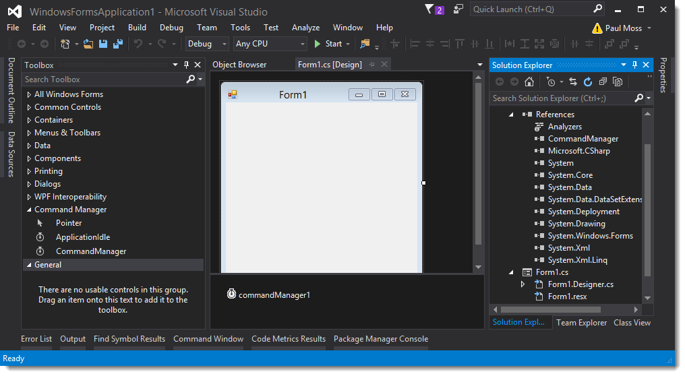

Adding Components to VS Toolbar
Adding Componets To Toolbar
AddingTab to Visual Studio Toolbox
Create Command Manager Tab
Choose Items Menu
Browse to CommandManager.dll
Select CommandManager.dll
Filter using CommandManger and choose CommandManager Items.
Components are now added to Visual Studio Toolbar.
